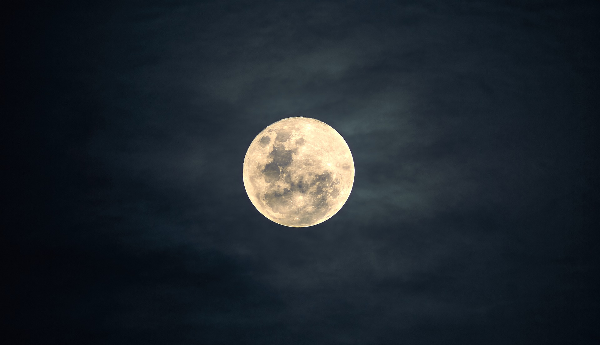

Niebo nocą
Niebo można obserwować również nocą w celu poznania pogody na najbliższy czas. Nie jest to łatwe zadanie, ale niektóre wskazówki mogą się sprawdzić.
Czerwone księżyca lico, wody przybędzie nieco.
Gdy jasny księżyc wzejdzie, wnet siarczysty mróz nadejdzie
Gdy się gwiazdy w kupę mieszczą, wtedy zwykle deszcz nam wieszczą
